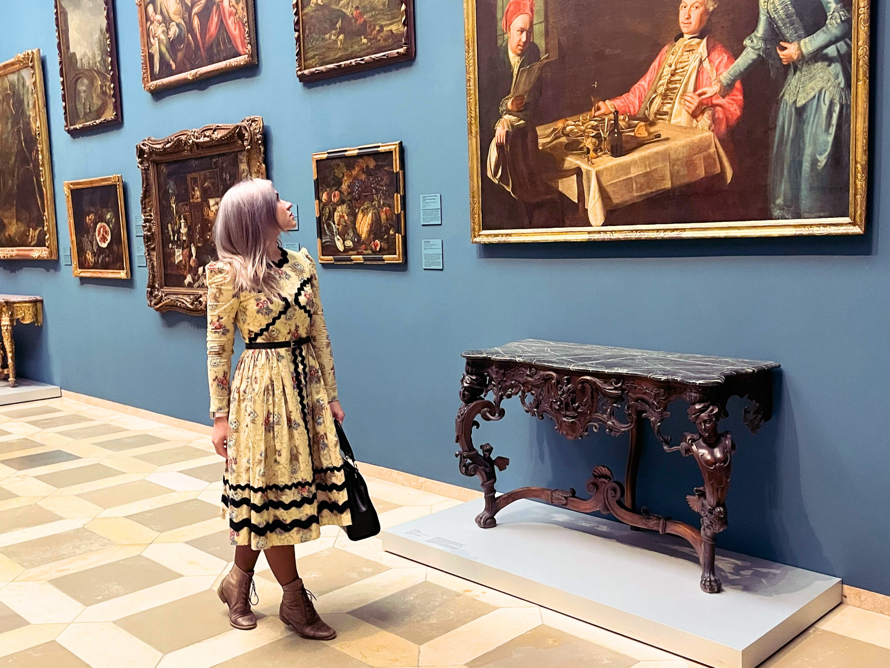
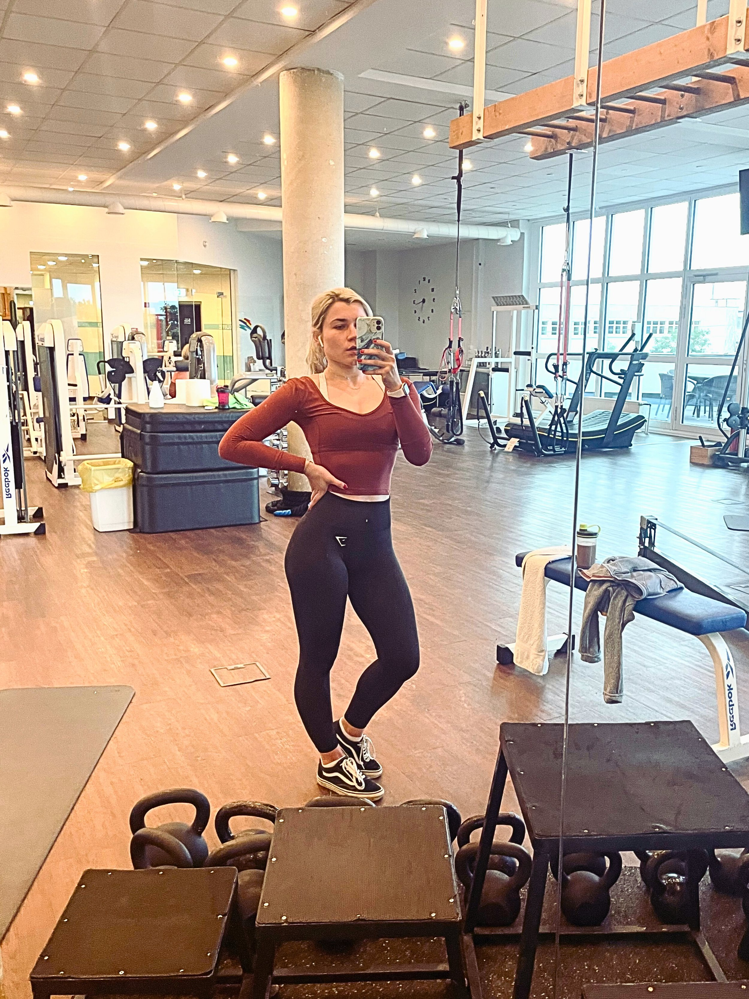
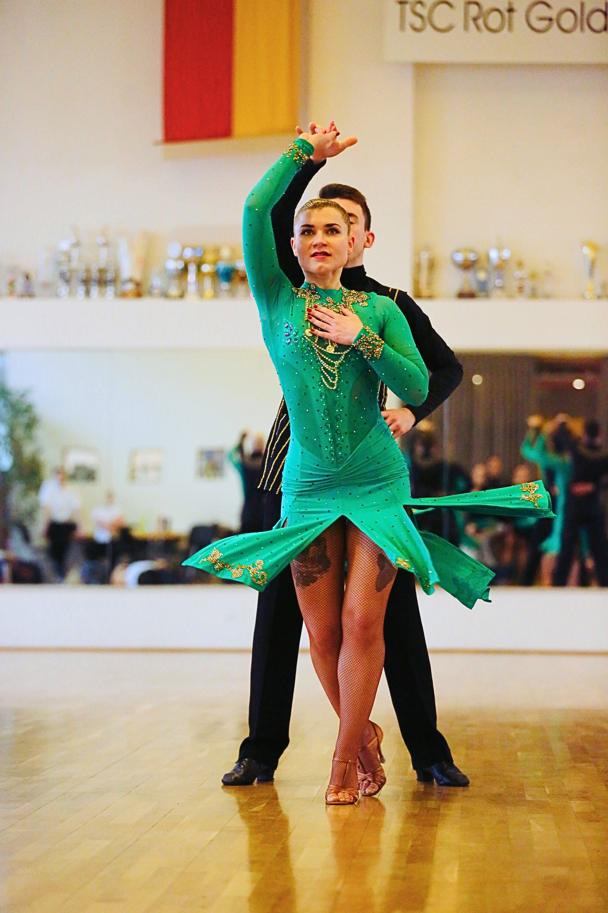

About me
My name is Anna Hellmuth. I'm a medical doctor, psychologist, and life coach.
I empower individuals to achieve greater well-being through transformative journeys, integrating medical and psychological expertise.
My lifelong fascination with the human body and mind began in my earliest memories. So I resolved to become a surgeon, eager to delve into the intricacies of human beings, and invested immense effort in that ambition. But, as often happens, life had other plans for me.
Throughout my medical training and subsequent career, I repeatedly witnessed patients facing preventable health crises with life-altering consequences. It became increasingly clearerto me that mindset played a more significant role in their well-being than the medications we prescribed, leaving me deeply dissatisfied. This internal struggle culminated in a debilitating burnout.
As I sought my own resolution, my profound interest in psychology and psychotherapeutic tools reached a new level. This pursuit led me to formally study psychology, resulting in both my personal healing and the discovery of my true calling: to transform people's lives and health through profound changes in their inner world. I wanted to shift from treating late-stage illnesses to proactively contributing to well-being.
Having unlocked my own inner strength and talents, I am eager to guide my clients through their transformative journeys. My approach has evolved into a integration of medical and psychological knowledge with psychotherapeutic and coaching methods—a path I continue to develop daily, and one I find deeply fulfilling.
My Education
Medical Doctor - Bogomolets National Medical University, Ukraine
Medical Doctor - Julius Maximilian University of Würzburg, Germany
Psychologist - Institute of Effective Psychology and Psychotherapy of Zina Shamoyan, Russia
Coach - Institute of Effective Psychology and Psychotherapy of Zina Shamoyan, Russia
Hypnotherapist (ongoing) - Milton Erickson Society for Clinical Hypnosis, Germany.
Since 2023, these skills have been instrumental in creating my online practice, a source of profound inspiration, learning, and fulfillment. I've realized I'm exactly where I'm meant to be.


My work approach
Every specialist brings their unique personality and values to their work, shaping an individual style. Here are some details about my approach: I am committed to facilitating profound and lasting transformation, guiding you towards a more authentic and fulfilling life
I know how much a good counselor and coach can help, and I am confident there is a way out.
If you've ever had at least one truly transformative moment in in your therapy, you know what I mean. If you haven't yet, I'd love to help you get there.


Our Collaborative Journey
We will work trough a staged process together, allowing for gradual progress
Step 1
Safe Space Creation
We establish a safe and confidential space where you can be completely honest and freely discuss any topic.
Step 2
Guided Exploration
In this safe space, I offer feedback and guide you on your journey of self-discovery. I respect your autonomy and do not provide life advice. My focus is on equipping you with the knowledge and techniques to navigate your emotional landscape. I serve as a support to help you make your own authentic choices.
Step 3
Transformative Process
Through this journey, you will:
Release the weight of emotional and mental burdens.
Gain a deeper understanding of your core self, your authentic needs, and your deepest desires, empowering you to live more purposefully.
Develop resilience and self-awareness by confronting your fears and doubts.
Cultivate a new inner state, which will naturally lead to an improved quality of life. This is where transformation begins…
Step 4
Lasting Change
The impact of our work continues to unfold long after our sessions end. Like a carefully planted seed, it blossoms into lasting and beautiful results in your life. This is the reward for your dedicated and profound journey of self-exploration.
Why am I doing this
I believe in seeing beyond trauma and limitations, recognizing the vast potential within each person. So many brilliant and captivating souls remain bound by self-forged chains, their potential lying dormant. My mission is to break those chains.
Seeing a true personality blossom and share their unique gifts with the world fills me with joy. These transformative moments are precious, and I'm deeply grateful to be part of their journey.
There's nothing more rewarding than seeing you truly blossom, live authentically, and share your unique brilliance with the world. It's the most profound feeling, and my way of contributing to the greater good.
My services
From navigating life's difficulties to striving for greater fulfillment, I provide options designed to support your unique path



Still curious?
Here is a glimpse into my personal world
I am a highly sensitive person (HSP) and an INFJ personality type, according to the Myers-Briggs assessment.
I have been married for 10 years, with a happiness rate of approximately 96%. :)
My hobbies include ballroom dancing and fitness.
I'm fascinated by fashion and beauty history and possess a small collection of vintage dresses, jewelry, and perfumes.
I love finding those cute, cozy coffee shops where I can enjoy the atmosphere, sip my coffee, and people-watch for relaxation and inspiration.
Reading is a huge part of my life, and I try to read books in their original language whenever I can because translations just don't capture everything.
I find travel really inspiring, and I always get a fresh perspective when I immerse myself in other cultures.
As a child, I set a goal to read all seven Harry Potter books in different languages. My current stats: I speak English, German, Ukrainian, and Russian fluently, and I'm currently working on Italian (A2 level)—fingers crossed my lifespan is long enough to accomplish my goal. :)
My soul thrives on art, music, movies, and theater and I consistently prioritize these experiences in my life.
I love animals a lot, and initially, as a child, I wanted to become a vet. However, I changed my mind because I'm too sensitive to animal suffering and can't remain strong in the face of it. I stopped eating meat 13 years ago, and most of my charity and donations go toward animal welfare.